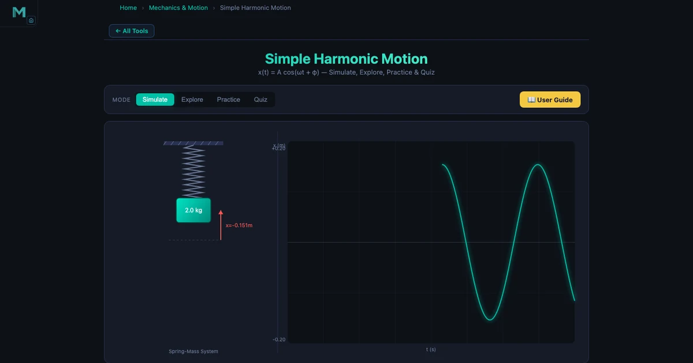
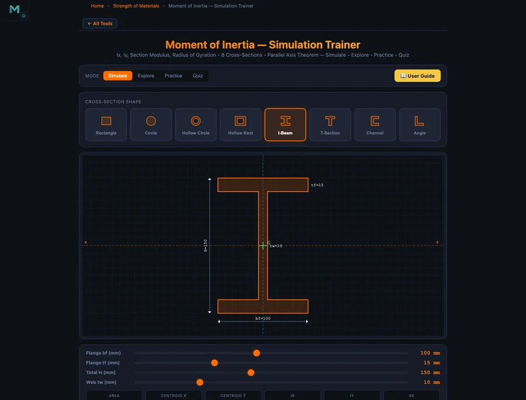

Learn Mechanical Engineering With Simulators — Free Student Guide

- You can learn mechanical engineering with free browser-based simulators that visualise core mechanics — Newton's second law (a = F/m), simple harmonic motion (ω = √(k/m), T = 2π/ω), moment of inertia, friction, and projectile motion — with no lab, account, or download required.
- Use them as a fast feedback loop: predict an output by hand, then check it — for example m = 5 kg with F = 25 N gives a = 5 m/s², and m = 2 kg with k = 50 N/m gives ω = 5 rad/s and T ≈ 1.257 s.
- Sequence the tools to match a typical module: Newton's Laws and Friction first (statics/forces), then Projectile Motion (kinematics), SHM (oscillation), and Moment of Inertia (rotational mechanics), spending 20–30 minutes per tool.
When you're studying mechanical engineering, there's a frustrating gap between the formula on the page and the behaviour it describes. You can write Newton's second law from memory — F = ma — but watching a 5 kg mass accelerate at exactly 5 m/s² when a 25 N force is applied is a different kind of understanding. Labs exist to close that gap, but lab slots are limited, equipment breaks down, and you can't pause a physical experiment to check your working mid-way through.
Free browser-based simulators change that equation. You can run them at midnight before an exam, pause them, vary one parameter at a time, and see the maths respond in real time. This guide walks through five core mechanics tools on NHIT VisualLab and shows you, specifically, how to use them to build genuine understanding — not just pass the next quiz.
Why Mechanical Engineering Students Struggle Without a Lab
Most first and second-year mechanical engineering courses cover statics, dynamics, and materials in the same semester. The concepts aren't individually hard — it's the density that gets you. You're expected to reason about forces, torques, oscillations, and friction simultaneously, often with limited hands-on time.
Here's the real problem: engineering isn't just symbol manipulation. When your lecturer writes \(a = F/m\) on the board, they picture the block sliding, the force vector pushing, the mass resisting. If you don't have that physical intuition built up, you're doing algebra, not engineering. Labs are supposed to give you that picture, but a single two-hour session with a spring and a timer once per semester doesn't cut it for most students.
Simulators aren't a replacement for physical labs — they're a complement. Use them to build the mental model before the lab, so you arrive already knowing what to expect. Use them after the lab to run the experiment again with parameters your setup couldn't accommodate. Use them the night before the exam to check whether your gut agrees with your calculator. That three-way approach is what separates the students who understand mechanics from the ones who just memorise formulas.
Tool 1: Newton's Laws — Force, Mass, and Acceleration
Newton's second law is where every dynamics course begins, and it's deceptively easy to think you understand it before you actually do. The Newton's Laws Simulator gives you three separate modes: inertia, F = ma, and action-reaction. Start with the second law mode.
Set mass to 5 kg and applied force to 25 N. The simulator calculates:
\[a = \frac{F}{m} = \frac{25\,\text{N}}{5\,\text{kg}} = 5\,\text{m/s}^2\]
Watch the block accelerate on the canvas. Now double the mass to 10 kg without changing the force. Acceleration drops to 2.5 m/s². That's the inverse relationship made visible — and it clicks in a way that the equation alone doesn't produce.
Then try the inertia mode. This is where students often have misconceptions: they think heavier objects fall faster, or that a force is required to keep something moving. The simulator shows an object continuing at constant velocity when no net force acts — Newton's first law in action. Ask yourself: what would happen if you applied a sideways force to an object already moving forward? The action-reaction mode then shows how every force has an equal and opposite response, which matters enormously when you start analysing contact forces and normal reactions in statics problems.
A good exercise: set up a scenario where you want a specific acceleration — say 3 m/s² — then calculate what force you'd need for masses of 2 kg, 5 kg, and 10 kg before checking the simulator. If your numbers match, your F = ma is solid. If they don't, you've found a gap before the exam found it for you.
Tool 2: Simple Harmonic Motion — Springs, Pendulums, and Oscillation
Oscillation is the topic that splits the class into two groups: those who get it immediately, and those who spend weeks wondering why there's a square root in the period formula. The Simple Harmonic Motion Simulator makes the connection between force, mass, stiffness, and oscillation feel inevitable rather than arbitrary.
Load the spring-mass mode with m = 2 kg and k = 50 N/m. The angular frequency is:
\[\omega = \sqrt{\frac{k}{m}} = \sqrt{\frac{50}{2}} = \sqrt{25} = 5\,\text{rad/s}\]
The period follows directly:
\[T = \frac{2\pi}{\omega} = \frac{2\pi}{5} \approx 1.257\,\text{s}\]
Set amplitude to A = 0.2 m. The total mechanical energy stored in the system is:
\[E = \frac{1}{2}kA^2 = \frac{1}{2} \times 50 \times 0.04 = 1.0\,\text{J}\]
Watch the energy readout on the simulator. At maximum displacement, all energy is potential. At equilibrium (x = 0), all energy is kinetic. The energy oscillates between the two but the total stays at 1.0 J — conservation of energy made tangible.
Now switch to pendulum mode. The period formula changes:
\[T = 2\pi\sqrt{\frac{L}{g}}\]
Here's the key insight the simulator drives home: change the pendulum's amplitude. The period doesn't change. This surprises almost every student the first time they see it — because intuition suggests a bigger swing should take longer. But the formula has no amplitude term for small oscillations. That's the isochronous property of the pendulum, and it's why Galileo used pendulums to measure time. Drag the amplitude slider from 5° to 25° and confirm it yourself — T stays constant to three decimal places.
For the exam question "compare a spring-mass system and a pendulum," the simulator lets you run both back-to-back, read off identical periods using different parameters, and understand why ω = √(k/m) and ω = √(g/L) are structurally the same equation — stiffness divided by inertia, under a square root. The Vibrations & Spring-Mass-Damper Guide extends this into damping and forced oscillation if you want to go further.
Tool 3: Moment of Inertia — Why Shape Determines Rotational Resistance
Students learn about second moment of area (often confusingly also called moment of inertia in mechanics) in their first structures or materials module. The formula for a rectangle is straightforward:
\[I_x = \frac{bh^3}{12}\]
But ask a student why an I-beam is used in construction instead of a solid rectangular bar, and the answer is often vague. The Moment of Inertia Simulator makes the answer concrete.
Open the Explore mode and go to the Shapes category. You'll find rectangle, circle, I-beam, and hollow section options. Start with a solid rectangle. Note the Ix and Iy readouts. Now switch to an I-beam with the same overall height — and the same approximate cross-sectional area. The Ix value jumps dramatically. Why? Because the I-beam concentrates material away from the neutral axis, and \(I_x\) is weighted by \(d^2\) where d is the distance from the neutral axis:
\[I = \bar{I} + Ad^2\]
That parallel axis theorem expression is the key to understanding composite sections. The flanges of an I-beam are thin, but they're far from the centroid — so their \(Ad^2\) contribution dominates. The web transfers shear but contributes relatively little to bending stiffness. The simulator shows you Ix and Iy updating as you adjust flange width, web height, and thickness — you can literally watch Ix grow as you move flange material outward.

Compare hollow and solid circular sections next. Same outer diameter, but the hollow section removes material near the centroid — where it contributes least to Ix — giving you nearly the same bending resistance at a fraction of the weight. This is why hollow tubes are used in bicycle frames and aircraft spars. The simulator doesn't just show you the formula; it shows you the engineering decision embedded in it.
A useful exercise before a structures exam: pick three cross-sections with similar areas, record their Ix values, then rank them by bending efficiency (Ix / area). The I-beam will consistently win for bending about the x-axis. That ranking is something you should be able to reproduce in your head during any beam design problem.
Tool 4 & 5: Friction and Projectile Motion — Putting Kinematics Together
These two tools work well as a pair because they both apply Newton's second law in slightly more complex situations — friction introduces a resistive force that changes the net force calculation, and projectile motion splits the problem into two independent axes.
Friction Simulator
Static and kinetic friction are governed by different limits, and students frequently confuse them. The Friction Simulator makes the distinction crisp:
\[f_s \leq \mu_s N \quad \text{(static — the object isn't moving yet)}\]
\[f_k = \mu_k N \quad \text{(kinetic — the object is sliding)}\]
One rule holds in every case: μs > μk. Static friction is always greater than kinetic. That's why it's harder to get something moving than to keep it moving — a fact you've experienced every time you pushed a heavy box across a floor, but which is easy to forget in the middle of an exam.
Set up a scenario with a 10 kg block, μs = 0.5, and μk = 0.35. The normal force N = mg = 98.1 N. Maximum static friction is fs = 0.5 × 98.1 = 49.05 N. Start increasing the applied force. Below 49.05 N, the block doesn't move — the static friction force exactly matches the applied force. The moment you cross that threshold, friction drops to fk = 0.35 × 98.1 = 34.3 N, and the net force becomes:
\[F_{\text{net}} = F_{\text{applied}} - f_k \quad \Rightarrow \quad a = \frac{F_{\text{net}}}{m}\]
Watch the block accelerate on the canvas as soon as the static limit breaks. That jump — from stationary to accelerating — is the friction transition, and it happens at a specific, calculable force. The simulator lets you feel the threshold rather than just compute it.
Projectile Motion Simulator
Projectile motion is one of those topics that looks straightforward on paper — just split into horizontal and vertical components — but trips students up in the exam when they try to find the angle that maximises range. The Projectile Motion Simulator handles both the intuition and the numbers.
The range formula for launch from ground level is:
\[R = \frac{v^2 \sin(2\theta)}{g}\]
At v = 20 m/s and θ = 45°: R = (400 × sin 90°) / 9.81 = 400 / 9.81 = 40.77 m. The simulator confirms this exactly. Now try θ = 30° and θ = 60°. Both give R = (400 × sin 60°) / 9.81 = 400 × 0.866 / 9.81 ≈ 35.31 m. They're the same — because sin(2 × 30°) = sin(60°) = sin(120°) = sin(2 × 60°). Complementary angles always give the same range.
That's a fact most students memorise without understanding. On the simulator, you can watch the two trajectories overlay each other on the canvas — the 30° path is flatter and faster horizontally, the 60° path climbs higher and spends more time in the air, but they land at the same point. The maximum height formula reinforces this:
\[H = \frac{v^2 \sin^2\theta}{2g}\]
At θ = 60°: H = (400 × 0.75) / 19.62 = 300 / 19.62 ≈ 15.3 m. At θ = 30°: H = (400 × 0.25) / 19.62 ≈ 5.1 m. Same range, very different height. That's the complementary angle property made visual. For a deeper treatment of the projectile motion simulator's features and worked examples, see the Projectile Motion Simulator Guide.
A Semester Study Plan Using These Simulators
The five tools covered here map onto a typical first or second-year mechanics module. Here's a practical study structure — not a rigid timetable, but a sequence that builds the right mental models in the right order.
Weeks 1–3 (Statics and Forces). Open the Newton's Laws Simulator at the start of the module. Run through all three modes — inertia, F = ma, and action-reaction — before your first lecture if possible. This gives you a reference point when the textbook introduces free-body diagrams. Come back to it whenever a homework problem asks you to find acceleration from given forces, and use it to sanity-check your answers. The Friction Simulator slots naturally here too — add it in week 2 when friction forces appear in your problem sets.
Weeks 4–6 (Kinematics and Dynamics). Move to Projectile Motion once you've covered uniform acceleration and velocity components. Run the simulator with several launch angles before your tutorial and note the range and height values. Bring those numbers to class — when your lecturer derives the range formula, you'll already have a table of real examples to anchor the algebra. This is also a good time to revisit the Friction Simulator with inclined plane scenarios.
Weeks 7–9 (Oscillation and Vibration). Introduce the SHM Simulator as soon as oscillation appears in your module. Work through the spring-mass calculation step by step: compute ω = √(k/m) by hand, then confirm with the simulator. Switch to the pendulum and test the isochronous property — this usually generates a good classroom discussion. If your module covers forced vibration, pair the SHM Simulator with the Vibrations & Spring-Mass-Damper guide.
Weeks 10–12 (Structures and Rotational Mechanics). The Moment of Inertia Simulator belongs here, alongside beam bending and torsion. Before each tutorial, load the simulator and compare at least two cross-sections you'll be using in that week's problems. Pay special attention to the parallel axis theorem — it's the concept students most often apply incorrectly in exams, and the simulator lets you see exactly what changes when you shift a section away from the centroid.
Exam week. Don't introduce new tools at this point — revisit the ones you've already used. Pick two or three parameter sets you've worked on during the semester and reproduce the outputs from memory first, then check the simulator. If your mental model and the simulation agree, you're ready. If they don't, you've found exactly where to spend the next hour reviewing.
The goal isn't to use simulators instead of working problems by hand. It's to use them as a fast feedback loop — run the numbers, check against the simulator, understand any discrepancy. That habit builds the kind of engineering intuition that textbooks describe but can't manufacture on their own.
Try It Yourself
All tools below are free — no account, no download.
Key Takeaways
- Newton's second law (a = F/m) is the foundation of dynamics — use the simulator to verify your calculations for any force-mass-acceleration problem before trusting your working.
- In SHM, angular frequency ω = √(k/m) and period T = 2π/ω. For a pendulum, T = 2π√(L/g). Both are independent of amplitude for small oscillations — the simulator confirms this interactively.
- The moment of inertia of a section is governed by shape, not just area. I-beams outperform solid rectangles because material is concentrated far from the neutral axis, maximising the Ad² contribution in the parallel axis theorem.
- Static friction (fs ≤ μsN) always exceeds kinetic friction (fk = μkN). The simulator shows the exact moment of transition — and calculates the resulting acceleration as soon as the static limit breaks.
- Complementary launch angles (30° and 60°) give the same range in projectile motion — R = v²sin(2θ)/g — because sin(60°) = sin(120°). At v = 20 m/s both give R = 35.31 m, but very different maximum heights.
- Build the habit of predicting simulator outputs before you run them. If your hand-calculation and the simulation agree, your understanding is solid. Discrepancies point you to exactly the concept that needs more work.
Frequently Asked Questions
Are these mechanical engineering simulators free for university students?
Yes — every simulator on NHIT VisualLab is completely free to use, with no account required and nothing to download. Open any tool directly in your browser and start experimenting. The five tools covered in this guide (Newton's Laws, SHM, Moment of Inertia, Friction, and Projectile Motion) are all accessible at NHIT VisualLab/tools/ at any time.
What topics in mechanical engineering can I study with the SHM simulator?
The Simple Harmonic Motion simulator covers the core oscillation topics in a typical dynamics or vibrations module: spring-mass natural frequency (ω = √(k/m)), period and frequency (T = 2π/ω), amplitude, and total mechanical energy (E = ½kA²). It also includes a pendulum mode where T = 2π√(L/g), letting you verify that period is independent of amplitude. These concepts underpin machine vibration, structural dynamics, and acoustics.
How does the Moment of Inertia Simulator help with structural design?
The Moment of Inertia Simulator lets you compare cross-section shapes — rectangles, circles, I-beams, and hollow sections — and see how geometry affects Ix and Iy in real time. It also demonstrates the parallel axis theorem (I = Ī + Ad²), which is essential when calculating the second moment of area of composite sections. Engineers use this daily when selecting beam profiles: an I-beam's material is concentrated far from the neutral axis, giving far higher bending resistance than a solid rectangle of the same area.
Can I use Newton's Laws Simulator to verify my statics homework?
Yes. Enter your applied force and mass, and the simulator calculates acceleration via a = F/m instantly. For example, m = 5 kg and F = 25 N gives a = 5 m/s². The tool also animates Newton's third law (action-reaction pairs) and lets you explore inertia by varying mass at constant force. It's a practical sanity-check for dynamics problems and a useful visual aid when studying force diagrams.
How should I structure a self-study session using these simulators?
Start with Newton's Laws to anchor force, mass, and acceleration concepts. Then move to Friction to extend Newton's second law to constrained motion with friction forces. Follow with Projectile Motion to apply kinematics in two dimensions. For oscillation topics, use the SHM Simulator to understand natural frequency and period before tackling the Moment of Inertia Simulator for rotational dynamics. Spend 20–30 minutes per tool: read the theory panel, try an example with known numbers, then vary one parameter at a time to see how the output changes.
Mechanical engineering is a subject where understanding compounds. Get Newton's laws right and friction problems become trivial. Nail SHM and damped vibration makes sense. Understand why an I-beam's shape matters and every beam design problem has a logical starting point. The five simulators in this guide aren't a shortcut — they're a fast lane to the intuition that turns equations into engineering.
Pick one tool — start with the Newton's Laws Simulator if you're at the beginning of your dynamics module. Set a force, set a mass, watch the acceleration, change the mass, watch it again. Five minutes of that is worth twenty minutes of re-reading the same textbook paragraph.